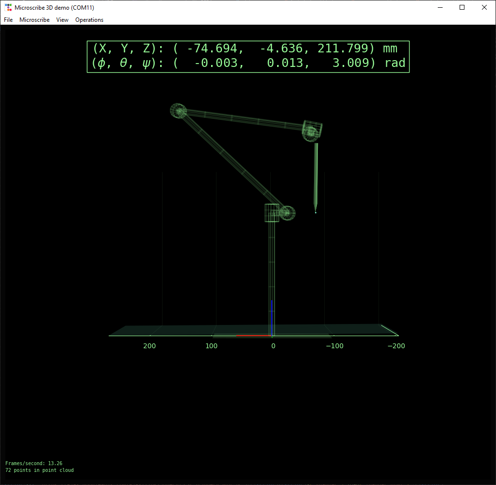
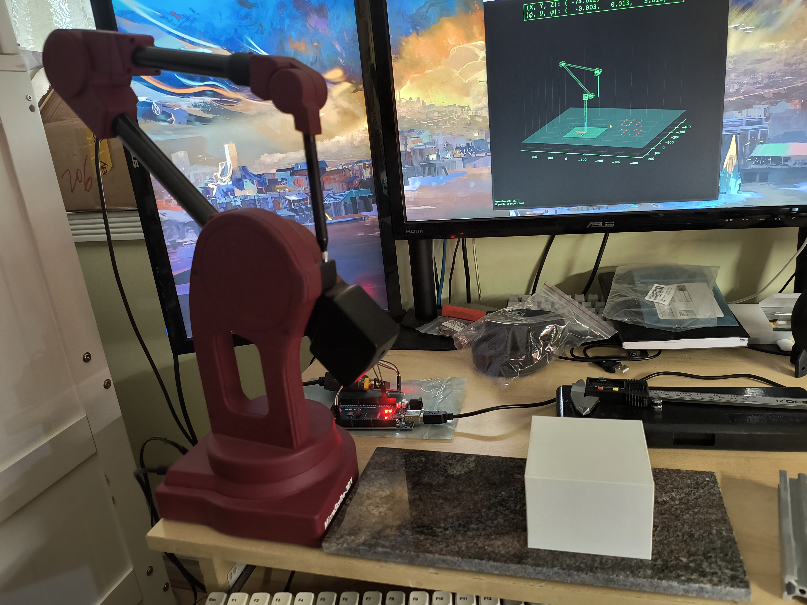
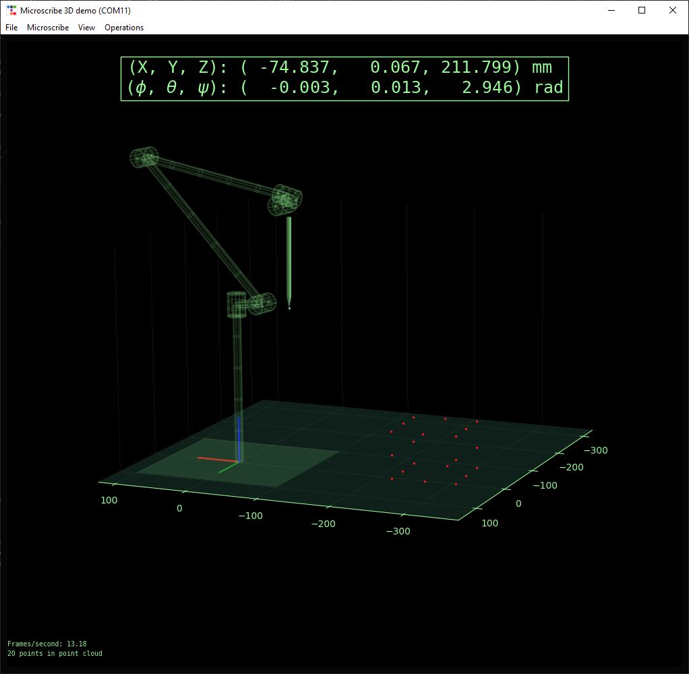
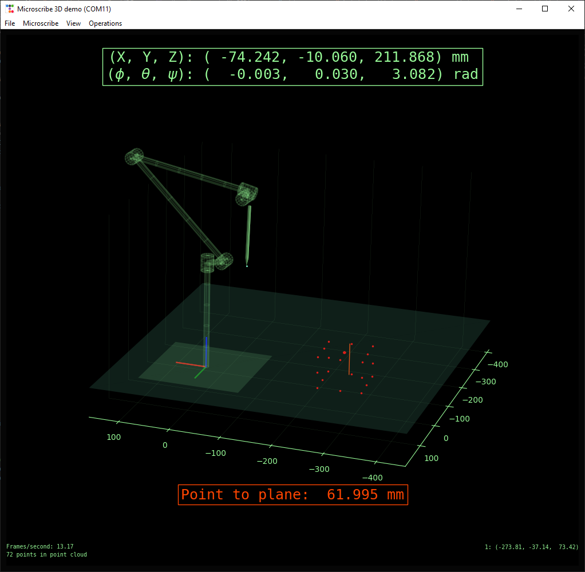
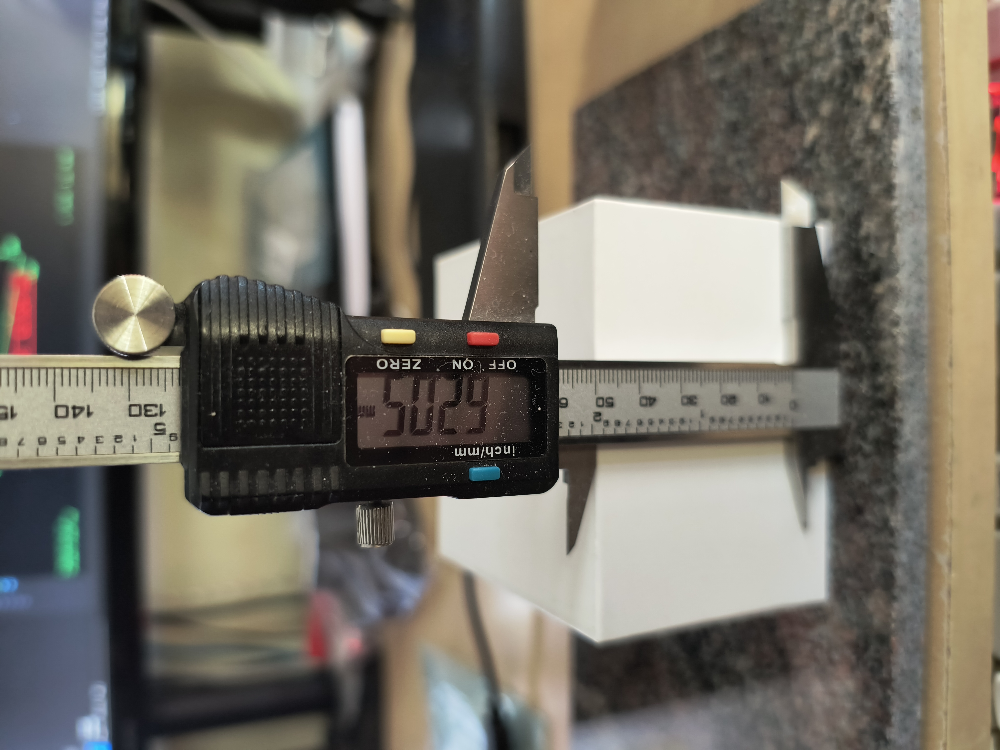
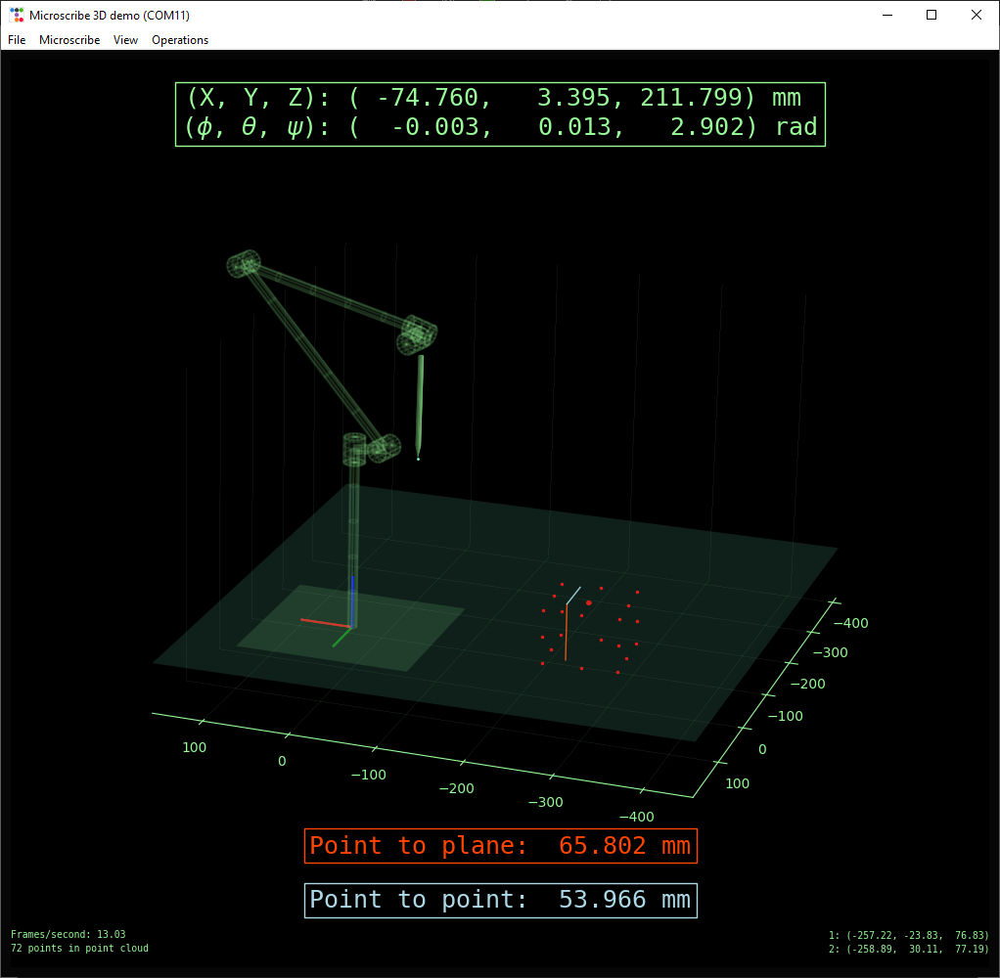
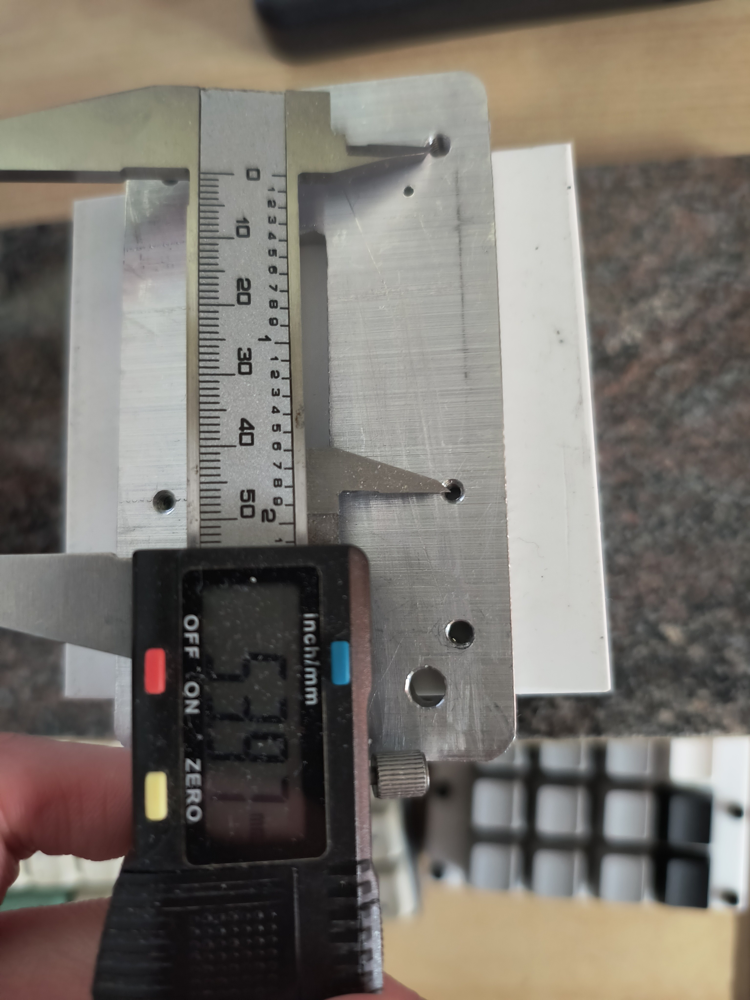

MicroScribe

Connecting to an old portable CMM (MicroScribe 3DX). This is a robot arm type CMM using
serial link kinematics to track the tip position. I wanted to check the functionality of this device
but the original software wasn't readily available, so I wrote my own.
The code:
https://github.com/jarofmolasses/microscribe
Hardware


If our PC had an RS-232 port like before, we could directly connect the MicroScribe and have our python program handle everything.
Unfortunately not the case for us now, so instead we use an Arduino as RS-232 adapter.
The Arduino isn't strictly necessary to do this, a direct USB-RS232 adapter could work as well and would be cleaner hardware-wise.
I didn't have one when I started the project and it was convenient enough to write a bit of Arduino code to handle it, using the original SDK as a starting point.
The old SDK and an example Arduino port are archived here: https://github.com/martennettelbladt/microscribe/tree/main
Software

The PC software is written in python and unwisely uses matplotlib as a 3D graphics engine. Matplotlib is not intended to do this,
but it actually works pretty decently - lack of graphics acceleration notwithstanding. Using the joint angles reported by the Microscribe,
a live updating 3D model of the arm is displayed in the GUI.
The app is mostly intended to be a simple demonstration but it has some CMM functionality:
- Define reference plane using three points
- Measure normal distance to reference plane
- Measure distance between two points
- Generate and export point clouds
Forward kinematics

Source code for demo: DHjointsDemo.py
We can determine the position and orientation of the stylus by computing the forward kinematics of the arm.
There are many ways to describe the kinematics of the system, so how we approach this will depend on how the constants have been stored in
the machine EEPROM.
The Arduino code provides a function print_hci_strings() to pull the system information from the unit, we get:
PRODUCT NAME: MicroScribe3D
PRODUCT ID: MSCR
MODEL NAME: DX
COMMENT: Standard+Beta
PARAM FORMAT: Format DH0.5
VERSION: HCI 2.0
I'm actually not sure what "DH0.5" refers to, but I assumed that it means modified Denavit-Hartenberg (as opposed to standard DH) parameters, and this seems to check out.
A reference frame is placed at each joint, plus the tip of the stylus, for a total of n = 6.
The static "zeroth" reference frame is at the base of the unit.
Each reference frame is described by 4 parameters - 3 constant and 1 variable:
- \(D\) : (constant) distance along current Z axis to previous reference frame
- \(A\) : (constant) length of the common normal between current reference frame and previous
- \(\alpha\) : (constant) rotation about the common normal between current reference frame and previous
- \(\theta\) : (variable) joint rotation angle
print_param_block(), with which we can get the constant parts of the transformation matrices:
OFFSETS D:
210.820007
-22.250398
-0.025400
234.848403
8.128000
-134.010391
OFFSETS A:
0.000000
24.307800
260.400787
13.893800
-10.160000
10.160000
SKEW ALPHA:
0.000000
1.567824
0.002684
1.567920
-1.572618
-1.569550
The MicroScribe is polled periodically for joint angle \(\theta\) as measured by the encoders. With all D-H parameters populated, the 3D affine transformation matrix \(T_n\) can be written to describe the position and orientation of the \(n\)-th reference frame relative to the previous one, like this: $$ T_n = \begin{bmatrix} \cos(\theta_n)&\sin(\theta_n)&0 &A_{n-1} \\ \sin(\theta_n)\cos(\alpha_{n-1})&\cos(\theta_n)\cos(\alpha_{n-1})&-\sin(\alpha_{n-1})&-D_n\sin(\alpha_{n-1}) \\ \sin(\theta_n)\sin(\alpha_{n-1})&\cos(\theta_n)\sin(\alpha_{n-1})&\cos(\alpha_{n-1})&D_n\cos(\alpha_{n-1}) \\ 0 & 0 & 0 & 1 \end{bmatrix} $$ The zeroth reference frame is the global fixed reference, its matrix is simply the identity matrix: $$ T_0 = \begin{bmatrix} 1 & 0 & 0 & 0\\ 0 & 1 & 0 & 0\\ 0 & 0 & 1 & 0\\ 0 & 0 & 0 & 1\\ \end{bmatrix} $$ It follows then that the tip position and orientation described by \(T\) is found by multiplying each transformation in the chain: $$ T = [T_0][T_1][T_2][T_3][T_4][T_5][T_6] $$
Point clouds


Point clouds up to 2000 points can be generated, and exported as CSV files.
Point to plane measurements


Three points can be collected (starting with origin, then defining two basis vector endpoints) which define a reference plane.
Then, the normal distance between the tip and reference plane can be measured.
Point to point measurements


A second measurement will bring up the point-to-point distance between the two latest measurement points.
Further work
- Fitting a ruby ball tip
- Porting to pyQT
- Moving Arduino code to python to allow for the use of a simple RS232-USB adapter
- Calibration and alignment of DH parameters
- More CMM capabilities - checking against CAD model, advanced measurements, etc.